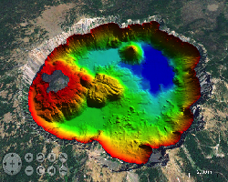
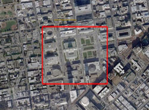
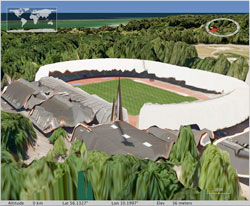
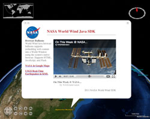
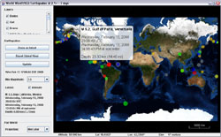
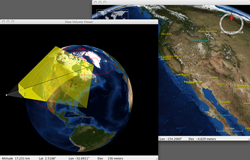
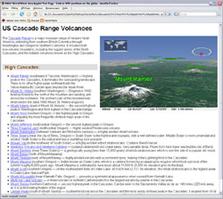
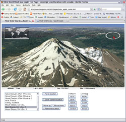
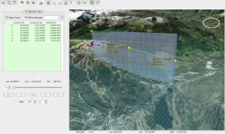
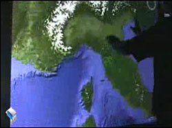

NASA World Wind Java Demo Applications and Applets
Last modified July 16, 2011
This page gives you access to a number of World Wind
Java example
applications or applets, and user applications of the SDK.
[-]World Wind Java
Example
Applications
Application Template
This is the most basic usage of the SDK. It shows the default globe with the default layer list and panel.
It features the Earth with SRTM Plus elevation and bathymetry, the Blue Marble Next Generation may 2004, I Cubed
Lansat 15m, and United States Department of Agriculture NAIP imagery
layers among others. It also displays the stars background, atmospheric effect, compass, world map and scalebar that
are common to most of the example applications.
> ApplicationTemplate.jnlp - launch with Java Web Start.
WMS Layer Manager
This example application demonstrates the SDK WMS capabilities. It features a WMS layer panel that allows you to
access any WMS server and layers.
To add a server, click on the "+" tab and enter the server url. After the WMS discovery process, the list of
available layers will be displayed. Select one to add it to the current globe layer list. Unselect it to remove
it.
> WMSLayerManager.jnlp - launch with Java Web Start.
KML Viewer
 KML Viewer
KML Viewer
Demonstrates loading, displaying, and interacting with KML content in World Wind.
> KMLViewer.jnlp - launch with Java Web Start.
Installing Images And Elevations Demo

Install Imagery And Elevations
The World Wind Java Installing Imagery And Elevations Demo enables a user to install image data and elevation data
from a file on the local hard drive. This data can be installed as a full pyramid of tiles or as a partial pyramid.
Installing a full pyramid takes longer and consumes more space on the user's hard drive, but has the best runtime
performance. Installing a partial pyramid takes less time and consumes less space on the user's hard drive, but
requires that the original data not be moved or deleted.
> InstallImageryAndElevationsDemo.jnlp - launch with Java
Web Start.
Exporting Surface Imagery and Elevations

ExportImageOrElevations
Demonstrates how to use the SectorSelector utility to save a selected region of surface imagery and elevations to a
GeoTIFF file.
> ExportImageOrElevations.jnlp - launch with Java Web Start.
Scankort Denmark Data

Scankort Denmark Data
Demonstrates high resolution imagery (0.2 meters per pixel) and elevation data (1.6 meters per pixel) served by the
World Wind WMS, and visualized by the World Wind Java client.
> ScankortDenmark.jnlp - launch with Java Web Start.
Rigid Shapes
Demonstrates visualization of common rigid shape types in World Wind Java. Includes six rigid shape types: Box,
Cone, Cylinder, Ellipsoid/Sphere, Pyramid, and Wedge.
> RigidShapes.jnlp - launch with Java Web Start.
Extruded Shapes
Shows visualization of textured 3D buildings with World Wind Java SDK Extruded Shapes.
> ExtrudedShapes.jnlp - launch with Java Web Start.
Surface Shapes
Demonstrates visualization of common terrain following shapes in World Wind Java. Includes five surface shape types:
SurfacePolyline, SurfaceQuad/SurfaceSquare, SurfaceEllipse/SurfaceCircle, SurfaceSector, and SurfacePolygon.
> SurfaceShapes.jnlp - launch with Java Web Start.
Airspaces
Demonstrates the World Wind Java controlled airspaces tookit.
Airspaces feature 3D volumes controlled by geographic coordinates and upper- and lower- altitude boundaries.
Airspaces optionally conform to the terrain as you move them. They demonstrate what's possible in terms of dynamic
manipulation of data in 3D space.
> Airspaces.jnlp - launch with Java Web Start.
Analytic Surface
Demonstrates visual representation of scalar values over a grid of geographic positions. AnalyticSurface supports
dynamic scalar data by providing a simple, high throughput rendering pipeline for the application.
This demonstrates two unique surface types:
- A dynamic surface representing random altitudes over the Coast of Florida, USA.
- A static surface representing annual precipitation in Washington State, USA.
> AnalyticSurface.jnlp - launch with Java Web Start.
Video On Terrain
Illustrates how applications can display video on the globe's surface.
> VideoOnTerrain.jnlp - launch with Java Web Start.
Web Browser Balloons

Web Browser Balloons
Demonstrates use of World Wind browser balloons to display HTML, JavaScript, and Flash content to the user in the
form of a screen-aligned balloon. There are two browser balloon types: ScreenBrowserBalloon which displays a
balloon at a point on the screen, and GlobeBrowserBalloon which displays a balloon attached to a position on
the Globe.
> WebBrowserBalloons.jnlp - launch with Java Web Start.
Annotations
This example allows you to experiment with the multiple options of World Wind Java annotation feature.
Annotations are text labels with support for multiline text, simple HTML and many styling attributes such as font
face, size and colors, bubble shapes and background image.
> Annotations.jnlp - launch with Java Web Start.
On Screen Controls
Demonstrates the use of World Wind annotations to create simple user interfaces embedded into the World Window.
> AnnotationControls.jnlp - launch with Java Web Start.
MGRS Graticule
Shows visualization of the Military Grid Reference System (MGRS) as a graticule overlayed on the globe's
surface.
> MGRSGraticule.jnlp - launch with Java Web Start.
Terrain Profiler
This application shows the terrain profile layer in action with its various controls. It allows you to view a
realtime section profile graph for any place on the planet, at any scale - continent, country or mountain range...
just by moving the mouse.
It proves particularly useful to explore the ocean floors where the bathymetry data reveals important geologic
features.
> TerrainProfiler.jnlp - launch with Java Web Start.
Flat World Earthquakes

Latest earthquakes
on Mercator Flat World
This example shows the latest earthquakes over a flat world projection. It allows you to see the whole globe at once
while retaining the capability to zoom onto the surface and still experience 3D terrain.
> FlatWorldEarthquakes.jnlp - launch with Java Web Start.
Anaglyph Stereo
 Anaglyph Stereo
Anaglyph Stereo
This is essentially the above application template but with anaglyph stereo viewing capability. It allows you to
explore the world in 'real' 3D using red and cyan glasses with the red filter over the left eye.
To get a comfortable experience use the slider to adjust the interocular distance.
> AnaglyphStereo.jnlp - launch with Java Web Start.
Multi-Window View Volume

Multi-Window View Volume
Demonstrates World Wind Java SDK support for rendering globes in multiple application windows. World Wind
automatically shares resources wherever possible across multiple windows in a single runtime environment.
> MultiWindowViewVolume.jnlp - launch with Java Web Start.
View Tracking
Demonstrates how applications can keep a set of moving objects in view.
> KeepingObjectsInView.jnlp - launch with Java Web Start.
Line Builder
This simple example allows you to interactively draw a path over the terrain surface.
It demonstrates how an application can use and consume mouse events before they get to the default view input
handler.
> LineBuilder.jnlp - launch with Java Web Start.
Airspace Builder
Demonstrates runtime construction of 3D shapes using the World Wind Java controlled airspaces toolkit
> AirspaceBuilder.jnlp - launch with Java Web Start.
| Controls |
| Create a new shape: |
Press the "New shape" button.
If the option "Auto fill new shapes" is checked, a default shape will be
created for you.
|
| Select a shape: |
Left mouse button click |
| Delete a shape: |
Select the shape, then press the delete key. |
| Move a shape or move a control point: |
Drag the shape or control point with the left mouse button |
| Resize a shape: |
Hold the Shift key and drag any control point with the left mouse button |
| Create a control point: |
Hold the Alt key and click the left mouse button |
| Delete a control point: |
Hold the Ctrl key and click the left mouse button |
[-]World Wind Java
Applets Examples
Cascade Volcanoes Tour Applet

Cascade Volcanoes Tour Applet
This page shows a World Wind applet controlled from HTML hyperlinks in the page body text.
In this example all the specific elements - text labels and view positions, are controlled from the HTML and
Javascript code within the page. The same java applet could be used for many other purposes without any
change.
> Cascade Volcanoes Tour Applet page...
See also:
> The 'full page' applet...
Javascript Location-marks Applet

Javascript Location-marks Applet
This page allows you to save the view current location into a list of favorite places.
When double clicking on a location in the list, the view is sent flying to the position and angle it had when
you saved that location. The list is saved into a permanent cookie on the local computer and will be retrieved
the next time you come back.
> Javascript Location-marks Applet page...
[-]User Applications
GLIDER - Globally Leveraged integrated data explorer for research
GLIDER (Globally Leveraged Integrated Data Explorer for Research) is a NASA ACESS funded project. The goal of
this project is to integrate three existing applications, namely World Wind, Interactive Visualizer and Image
Classifier (IVICS) and the Algorithm Development and Mining (ADaM) toolkit into a single seamless tool for
research and education community. GLIDER will be a complete comprehensive, easy to use tool for thematic
information extraction from NASA imagery.
> GLIDER home page by UAHuntsville ITSC
GeoWind
GeoWind is an open source GIS platform that integrates OGC as implemented in GeoTools within NASA's
WorldWind.
The vision of this effort is the creation of an open geospatial system that enables the scientific modeling
process to be closer to a 'real world' experience.
> GeoWind home page
EOLi (Earth Observation Link) by ESA (European Space Agency)
EOLi (Earth Observation Link) is the European Space Agency's client for Earth Observation Catalogue and Ordering
Services.
Using EOLi, you can browse the metadata and preview images of Earth Observation data acquired by the satellites
ENVISAT, ERS, Landsat, IKONOS, DMC, ALOS, SPOT, Kompsat, Proba, JERS, IRS, Nimbus, NOAA, SCISAT, SeaStar,
Terra/Aqua.
By default, EOLi-sa uses a 2d drawing mode. To enable World Wind, click on the layered map icon in the upper
right for map settings. Then choose Orthographic or Plate Carrée (new 3D map) for a projection.
> ESA EOLi home page by ESA/ESRIN, Italy
Gaea+
Gaea+ features a rich combination of 3d building, landmark, street, and aerial photography data for
Slovenia.
> Gaea+ XLAB 3D
Viewer - launch
with Java Web Start.
Air Search And Rescue

Air Search And Rescue
This application helps search and rescue planners determine the best places to search after a plane goes
missing.
Using last known positions from ground radar and other sources, planners are able to reconstruct an aircraft
path and study it's position relative to the ground from any view point including that of the pilot.
> Search And Rescue Application
- launch with Java Web Start.
> Search and Rescue
Help
Geoscience Australia's World Wind Viewer
Geoscience Australia's World Wind Viewer is an application that displays Australia's continental data sets. The
viewer allows you to compare national data sets such as the radioelements, the gravity and magnetic anomalies,
and other mapping layers, and show the data draped over the Australian terrain in three dimensions.
The viewer currently displays the following Geoscience Australia data layers: Radiometric Map of Australia,
Gravity Anomaly Map of the Australian Region, Magnetic Anomaly Map of Australia
> World Wind Viewer home page by Geoscience Australia
World Wind Geo
"World Wind Geo is an experimental geo browser built on top of two of the best open source technologies: the
World Wind Java SDK and Eclipse."
"The new version of our 3D globe is closing the gap between GIS & SIS (Scientific Information Systems) by
incorporating low/med/hi resolution GIS datasets from multiple sources: NASA, MS Virtual Earth, and others plus
the great java NetCDF library for plotting/subsetting capabilities of scientific data."
> World Wind Geo home page by Vladimir Silva.
blueMarine
BlueMarine is an open source application for the digital photo workflow. It uses World Wind to display the
positions of georeferenced images over a 3D map.
"The blueMarine project will provide you an all-in-one tool for managing your photos, from the shoot up to the
archiving and beyond."
> blueMarine home page by Fabrizio Giudici.
JSatTrack
"JSatTrak is a Satellite tracking program written in Java. It allows you to predict the position of any satellite
in real time or in the past or future. It uses advanced SGP4/SDP4 algorithms developed by NASA/NORAD to propagate
the satellite orbits."
"The program also allows for easy updating of current satellite tracking data via CelesTrak.com. Because this
application was written in Java, it should run on almost any operating system or directly off the web using java
web start!"
"Version 3.0 requires Java 1.6 - and uses NASA's World Wind Java SDK (included) and JOGL for 3D rendering
(included for win)."
> JSatTrack home page by Shawn Gano.
GeoMapApp
"GeoMapApp (formerly MapApp) is a freely downloadable Java application, which permits users to browse bathymetry
data from the world’s oceans, generate and download custom grids and maps, and explore a variety of other data
types."
"GeoMapApp is a data exploration and visualization tool that is continually being expanded as part of the Marine
Geoscience Data System. GeoMapApp is an integrated mapping application developed at Lamont-Doherty Earth
Observatory."
> GeoMapApp home page by William Haxby, with support from the
LDEO Marine Geoscience Data System.
DARPA ARGUS-IS
"The mission of the Autonomous Real-time Ground Ubiquitous Surveillance - Imaging System (ARGUS-IS) program is to
provide military users a flexible and responsive capability to find, track and monitor events and activities of
interest on a continuous basis in areas of interest."
"The ground processing subsystem enables users to interact with the ARGUS-IS airborne systems. The user
interface, based on NASA World Wind software, facilitates specification of areas where imagery is desired
throughout the entire ARGUS-IS field of view."
> DARPA ARGUS-IS home page.
> A next-generation system enables persistent surveillance
of wide areas Brian Leininger, ARGUS-IS Program
Manager, SPIE March 2008.
MyUniPortal
"The free high tech learning portal for kids throughout the world."
"MyUniPortal combines information from different sources such as html, video media, search engines into an
interface that allows the data to be placed into separate windows specific for that data (Browser, Video Viewer,
Query Viewer, 3D Maps)."
> MyUniPortal home page by Anthony Anecito.
GeoAgSys 4D
"GeoAgSys is an Agricultural based software system built on top of the NASA World Wind SDK. It is currently in
development."
"GeoAgSys will rely on hardware systems such as GPS, Radio Telemetry, and Embedded controller systems to achieve
geographic based monitoring and remote control of on-farm systems including frost protection and precision
irrigation."
> GeoAgSys 4D home page.
Media Watch on Climate Change - Knowledge Planet
"The Knowledge Planet applet shows that virtual globes are not only suited to explore geographic maps, but can
also serve as rendering engines for other types of imagery. It visualizes large document collections using a
landscape metaphor. The peaks of the virtual landscape indicate abundant coverage on a particular topic, whereas
valleys and oceans represent sparsely populated parts of the information space."
"The Media Watch on Climate Change is developed as part of the IDIOM (Information Diffusion across Interactive
Online Media) research project. The consortium partners behind the project share an interest in the determinants
and impacts of anthropogenic climate change, and in the potential of three-dimensional interface technology to
support communication and collaboration in virtual communities."
> The Media Watch on Climate Change home page.
IFGI Multi-Touch Wall

IFGI Multi-Touch Wall (video)
The University of Muenster Institute for Geoinformatics is using World Wind Java for a multi-touch wall
project.
"We developed a Multi-Touch version of Nasa World Wind on a 7.9 x 6.2 feet tall FTIR (frustrated total internal
reflection) based Multi Touch wall. This implementation is based on a multi-touch tracking library developed
within the Project: Multitouch at the Deutsche Telekom AG Laboratories, which is part of the TU Berlin." Johannes
Schöning IFGI
> IFGI Project Multi-Touch home page.
> WWJ on Multi-Touch Wall video - YouTube.
Requirements
As for the whole World Wind Java project, please check the following points :
JOGL applet setup can be tested with this sample Gears
3D
JOGL
animation
applet.
Links